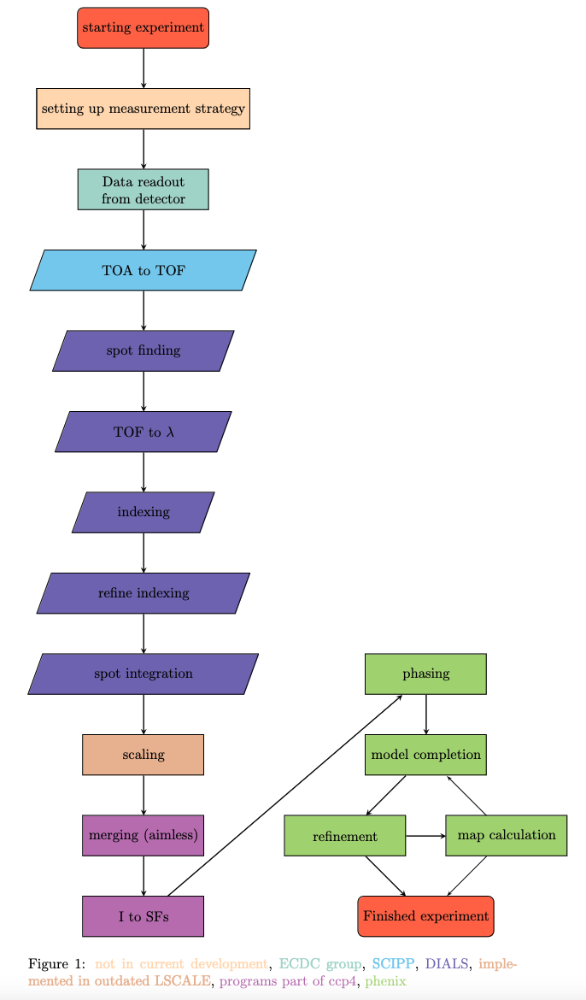

Data Workflow Overview#
This is an overall description of the data workflow for the NMX instrument at ESS.
The NMX Macromolecular Diffractometer is a time-of-flight (TOF) quasi-Laue diffractometer optimised for small samples and large unit cells dedicated to the structure determination of biological macromolecules by crystallography.
The main scientific driver is to locate the hydrogen atoms relevant to the function of the macromolecule.
Data reduction#

From single event data to binned image-like data (scipp)#
The first step in the data reduction is to reduce the data from single event data to image-like data.
Therefore the essNMX package is used.
The time of arrival (TOA) should be converted into time of flight (TOF).
Then the single events get binned into pixels and then histogramed in the TOF dimension.
This result can be exported to an HDF5 file
along with additional metadata and instrument coordinates (pixel IDs).
See workflow example for more details.
Spot finding and integration (DIALS)#
For the next five steps of the data reduction from spot finding to spot integration, we use a program called DIALS [1].
1. Import Image-like Files#
First, we use dials.import to convert image data files into a format compatible with dials.
It processes the metadata and filenames of each image to establish relationships between different sets of images.
Once all images are processed, the program generates an experiment object file, outlining the connections between the files.
The images to be processed are designated as command-line arguments.
Occasionally, there may be a restriction on the maximum number of arguments allowed on the command line, and the number of files could surpass this limit.
In such cases, image filenames can be entered through stdin, as demonstrated in the examples below.
The Format class for NMX is at modules/dxtbx/src/dxtbx/format/FormatNMX.py where beam-line-specific parameters and file format information are stored.
dials.import *.nxs
2. Search for Strong Pixels#
The next step is to search for strong pixels.
In this step, the intensity of each pixel or a pixel group is compared with its local surroundings.
With the information of strong pixels, strong spots are defined.
To find these spots, the centroids and intensities will be calculated.
The results can be visualised in the image viewer or the dial browser.
dials.find_spots imported.expt find_spots.phil
3. Index Instrument Geometry#
In the indexing step the unit cell is determined.
A list of indexed reflexes and an instrument model including a crystal model is returned.
One-dimensional and three-dimensional fast Fourier transform-based methods are available.
As input parameters the imported.exp and strong.refl files are used.
More parameters such as unit cell and spacegroup can be given.
dials.index imported.expt strong.refl space_group=P1 unit_cell=a,b,c,alpha,beta,gamma
4. Refine the Diffraction Geometry#
The result of indexing the instrument geometry is then used to get refined diffraction geometry [2].
dials.refine indexed.refl indexed.expt detector.panels=hierarchical
5. Integrate Reflexes#
The last step in DIALS is to integrate each reflex.[3]
Currently, different approach is used to integrate the dimension of the image and the dimension of TOF.
In the dimension of the image, a simple summation is used
and in the TOF dimension, a profile-fitting approach is used.
dev.dials.simple_tof_integrate refined.expt refined.refl
Scaling (LSCALE/pyscale)#
Currently LSCALE can be used in a docker container which makes it indented from the OS.
LSCALE is a program for scaling and normalisation of Laue intensity data.
The source code is available on Zenodo.
Since LSCALE is not maintained anymore we are currently developing a Python-based alternative to LSCALE called pyscale[4].
To start docker desktop
docker run -it -v $HOME:/mnt/host -v /tmp/.X11-unix:/tmp/.X11-unix -e DISPLAY=host.docker.internal:0 lscale
Command to run lscale
lscale < lscale.com > lscale.out
Merge Intensities and Derive Structure Factors (CCP4, AIMLESS and CTRUNCATE)#
AIMLESS and CTRUNCATE are sub-programs of CCP4.
AIMLESS can scale multiple observations of reflections together.
It can also merge multiple observations into an average intensity.
CTRUNCATE converts measured intensities into structure factors.
CTRUNCATE includes corrections for weak reflections to avoid negative intensities due to background corrections.
This step can be done via GUI interfaces of CCP4.
Start
CCP4GUIGo to
all programsSelect
AimlessSelect
scaled *mtz file
Parameters can be modified.
Standard parameters are fine in most cases.
The mtz file can be used in a standard protein crystallographic program to solve and refine the structure.